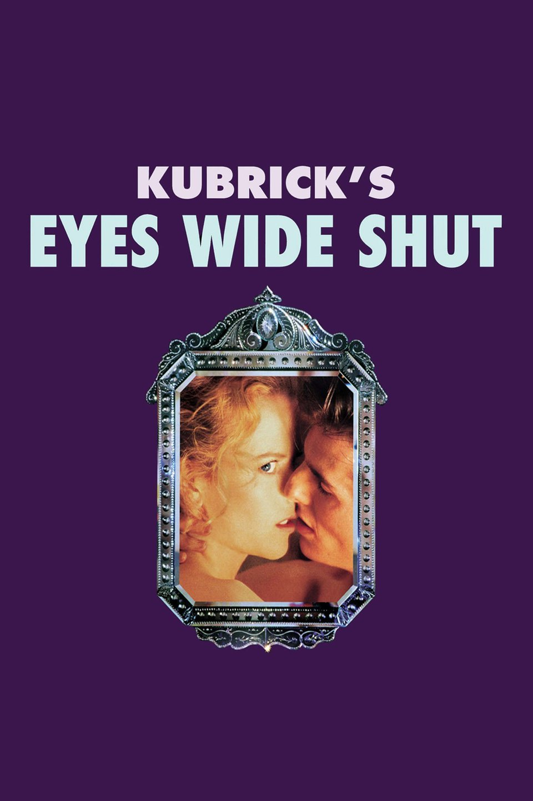
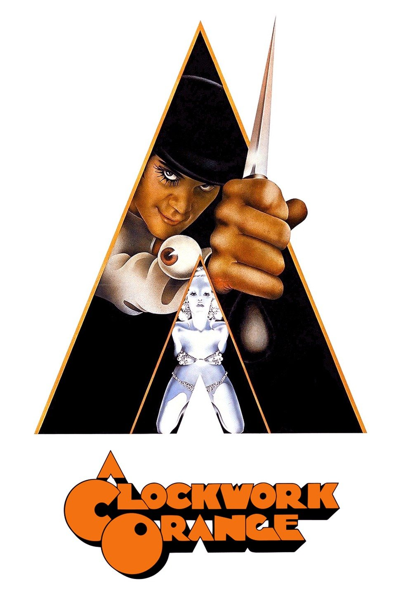
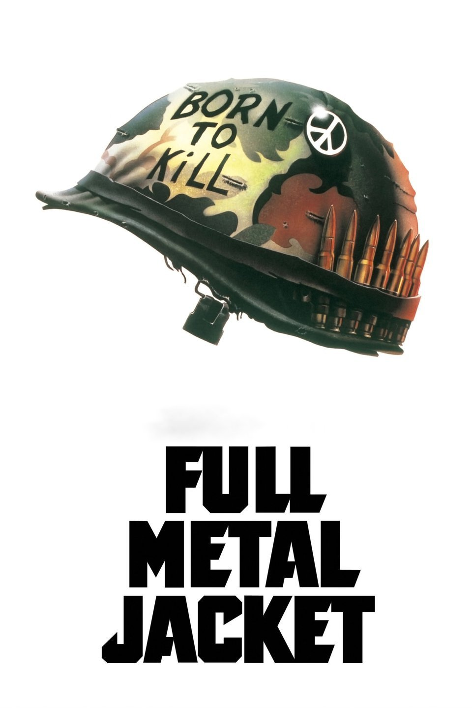
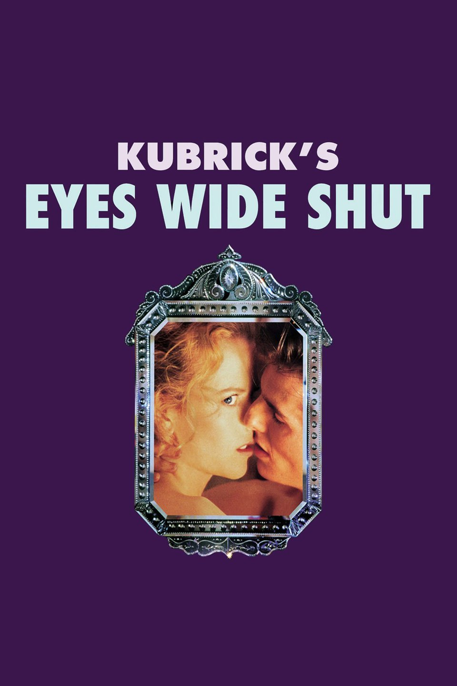
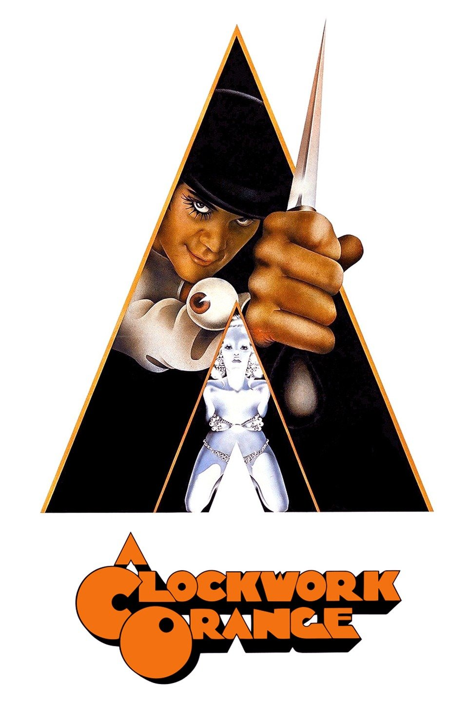
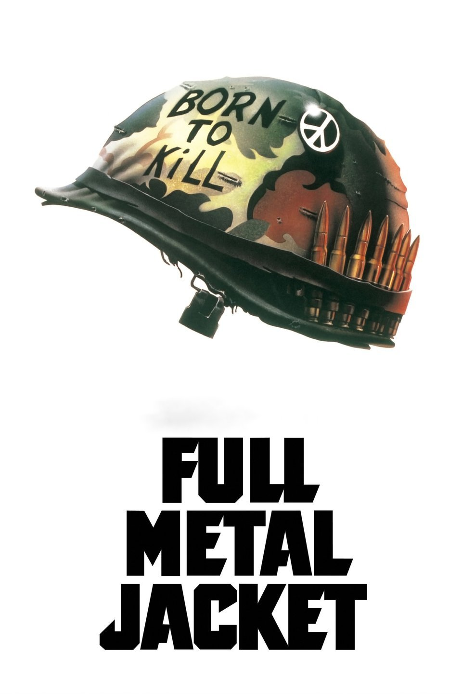
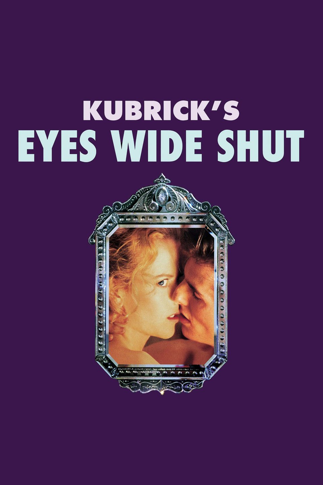
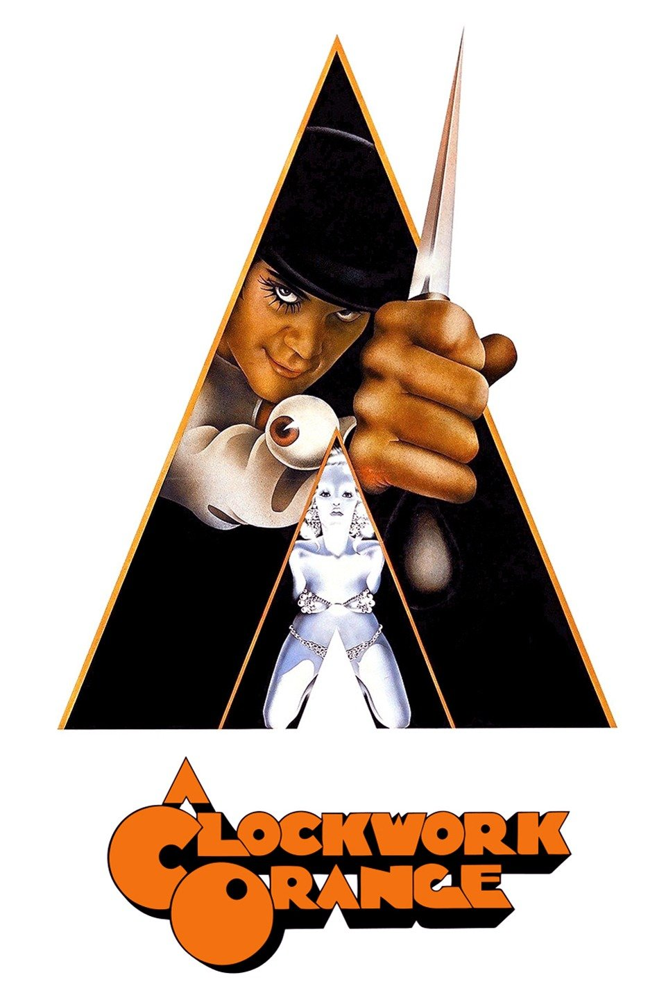
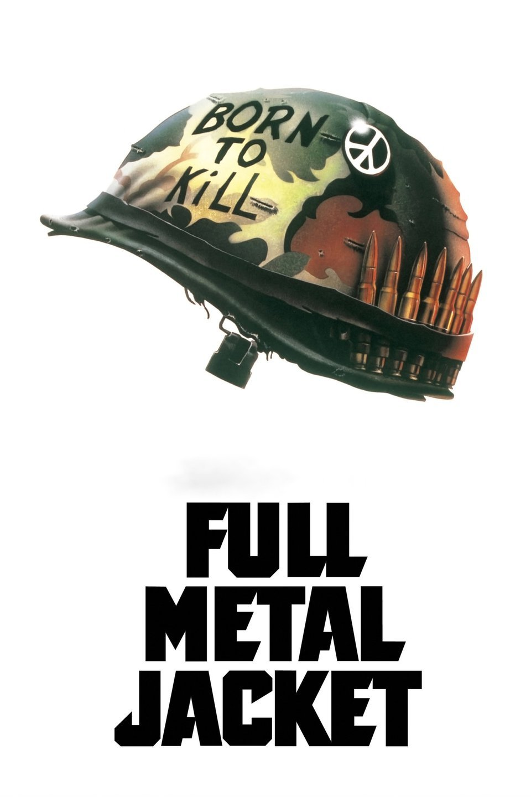

Stanley Kubrick was an American film director, screenwriter, and producer. He is frequently cited as one of the most influential filmmakers in cinematic history. His films, which are mostly adaptations of novels or short stories, cover a wide range of genres, and are noted for their realism, dark humor, unique cinematography, extensive set designs, and evocative use of music. Kubrick was raised in the Bronx, New York City, and attended William Howard Taft High School from 1941 to 1945. He only received average grades, but displayed a keen interest in literature, photography, and film from a young age, and taught himself all aspects of film production and directing after graduating from high school. After working as a photographer for Look magazine in the late 1940s and early 1950s, he began making short films on a shoestring budget, and made his first major Hollywood film, The Killing, for United Artists in 1956. This was followed by two collaborations with Kirk Douglas, the war picture Paths of Glory (1957) and the historical epic Spartacus (1960). His reputation as a filmmaker in Hollywood grew, and he was approached by Marlon Brando to film what would become One-Eyed Jacks (1961), though Brando eventually decided to direct it himself. Creative differences arising from his work with Douglas and the film studios, a dislike of the Hollywood industry, and a growing concern about crime in America prompted Kubrick to move to the United Kingdom in 1961, where he spent most of the remainder of his life and career. His home at Childwickbury Manor in Hertfordshire, which he shared with his wife Christiane, became his workplace, where he did his writing, research, editing, and management of production details. This allowed him to have almost complete artistic control over his films, but with the rare advantage of having financial support from major Hollywood studios. His first British productions were two films with Peter Sellers, Lolita (1962) and Dr. Strangelove (1964). A demanding perfectionist, Kubrick assumed control over most aspects of the filmmaking process, from direction and writing to editing, and took painstaking care with researching his films and staging scenes, working in close coordination with his actors and other collaborators. He often asked for several dozen retakes of the same shot in a movie, which resulted in many conflicts with his casts. Despite the resulting notoriety among actors, many of Kubrick's films broke new ground in cinematography. The scientific realism and innovative special effects of 2001: A Space Odyssey (1968) were without precedent in the history of cinema, and the film earned him his only personal Oscar, for Best Visual Effects. Steven Spielberg has referred to the film as his generation's "big bang", and it is regarded as one of the greatest films ever made. For the 18th-century period film Barry Lyndon (1975), Kubrick obtained lenses developed by Zeiss for NASA, to film scenes under natural candlelight. With The Shining (1980), he became one of the first directors to make use of a Steadicam for stabilized and fluid tracking shots. While many of Kubrick's films were controversial and initially received mixed reviews upon release—particularly A Clockwork Orange (1971), which Kubrick pulled from circulation in the UK following a mass media frenzy—most were nominated for Oscars, Golden Globes, or BAFTA Awards, and underwent critical reevaluations. His last film, Eyes Wide Shut, was completed shortly before his death in 1999 at the age of 70.


